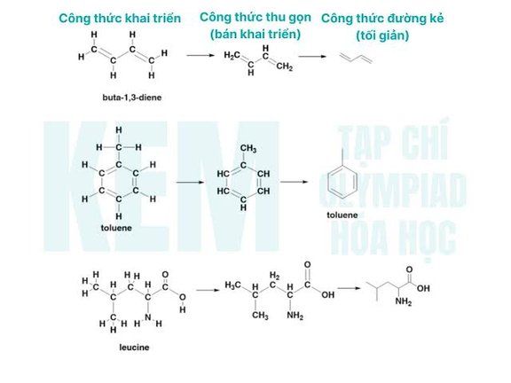

Homologous series
| Vietnamese | dãy đồng đẳng |
|---|---|
| English | Homologous series |
| Pronunciation | /ˌhɒməˈlɒɡəs ˈsɪəriːz/ |
| Word type | noun (as labelled in the PDFs) |
Topic 4 — Meaning (Vietnamese)
Nhóm các hợp chất hữu cơ có tính chất hóa học tương tự và cùng công thức tổng quát, trong đó hai chất kế tiếp nhau hơn kém nhau một nhóm CH₂
Meaning (English)
A group of organic compounds with similar chemical properties and the same general formula, in which neighboring members differ by a CH₂ unit (Nhóm các hợp chất hữu cơ có tính chất hóa học tương tự và cùng công thức tổng quát, trong đó hai chất kế tiếp nhau hơn kém nhau một nhóm CH₂).
Example
Methane, ethane, and propane belong to the same homologous series because they have similar chemical properties (Methane, ethane và propane thuộc cùng một dãy đồng đẳng vì chúng có tính chất hóa học tương tự nhau).
Images from the PDFs

